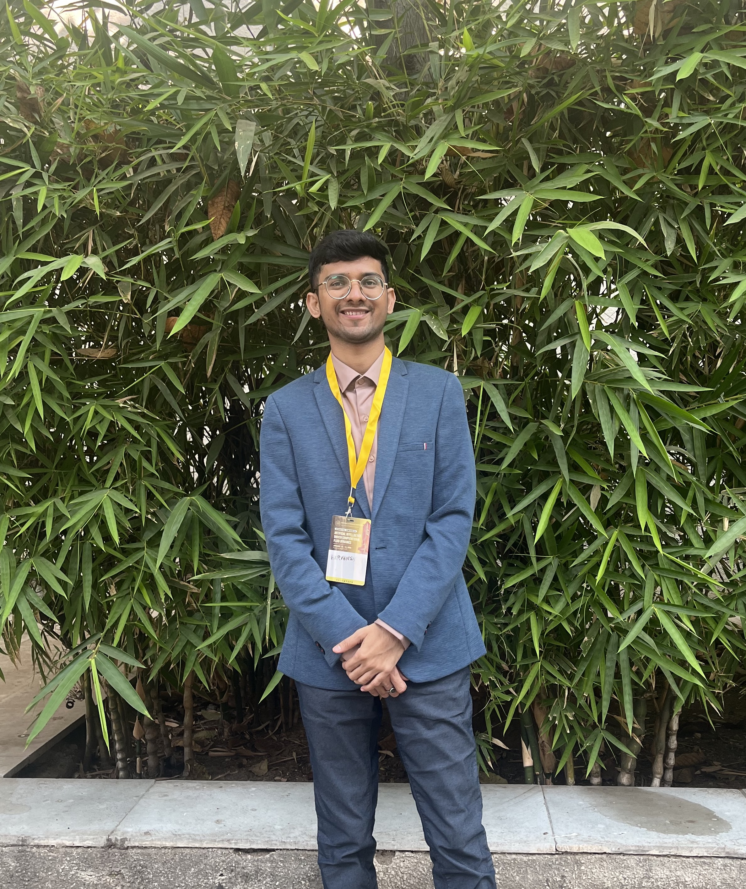

Research Associate-II
Indian Institute of Technology Gandhinagar
Seeking postdoctoral opportunities in: Fluid Mechanics, Hydrodynamic Stability, Computational Fluid Dynamics, and Scientific Computing
My research lies broadly in the area of hydrodynamic stability, transition, and flow control, with an emphasis on theoretically grounded and computationally intensive approaches for complex fluid flows.
During my M.Tech research, I worked on active flow control strategies for suppressing instability growth in airfoil boundary layers and Taylor–Couette flow using linear control techniques. This work introduced me to non-modal stability analysis, transient energy growth mechanisms, and optimization-based flow control approaches.
My doctoral research focused on the linear dynamics of pulsating Taylor–Couette flow using Floquet theory and direct–adjoint optimization methods. I investigated modal instabilities, harmonic–subharmonic transitions, and transient growth phenomena in time-periodic rotating flows. The work involved large-scale eigenvalue computations, spectral collocation methods, and high-performance numerical simulations.
More broadly, I am interested in fluid instabilities, transition to turbulence, scientific computing, spectral methods for partial differential equations, and computational fluid dynamics.
I am currently involved in collaborative research with researchers at LMFA, École Centrale de Lyon, particularly Prof. Benoît Pier and Prof. Frédéric Alizard, on subharmonic and harmonic behaviour of instabilities arising due to pulsating shear flow.
My ongoing work includes: